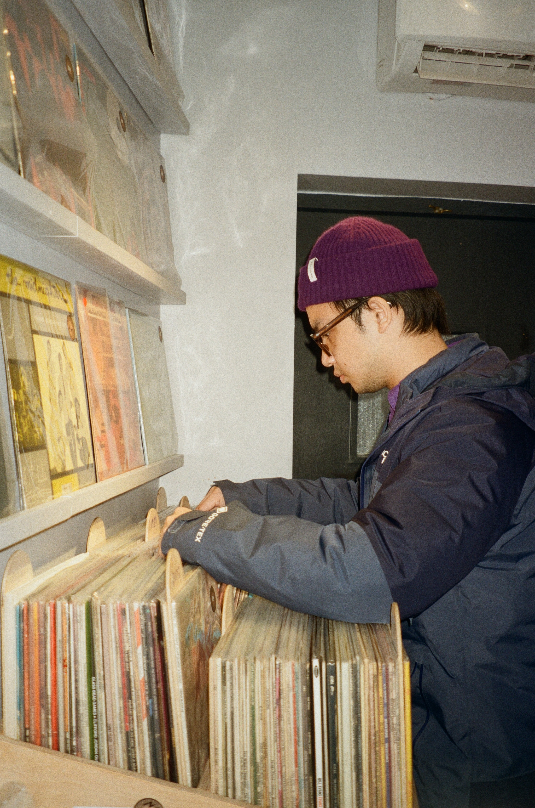
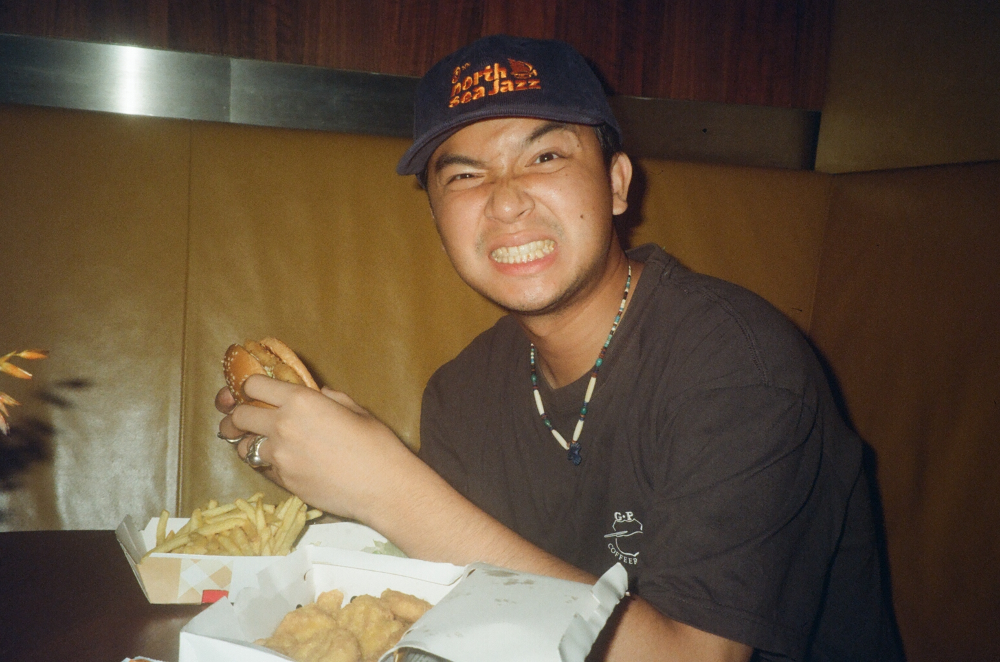

MUSIC FIRST. ALWAYS.
About GOATFANS

GOATFANS started in 2023 with a frustration shared by friends.
Why wasn't more of the music we loved reaching listeners in China?
So we decided to do something about it.
What began as friends making music content gradually brought together musicians, writers, creators, designers, presenters and producers — people who cared deeply about music and wanted to talk about it without flattening everything into trends and algorithms.
Since then, GOATFANS has grown into an independent music platform and a community of listeners across China.
The sound has grown with us.
Our roots are somewhere around soul, funk, jazz, R&B and hip-hop, but we've never been particularly interested in drawing hard lines around genre. If something moves us, there's probably room for it here.
GOATFANS is now taking the same curiosity, audience and editorial instinct that built the platform and using it to help independent artists from around the world find their way into China.
Not simply to be distributed here.
To be understood here.

YIYANG RONG (CHRIS)
Hi, I’m a Chinese musician and content creator based in London.
Originally from Shenzhen, China, and shaped by time spent in New York and London, my musical world draws heavily from soul, funk, jazz, R&B and the wider Black musical traditions that have influenced generations of popular music.
As both an artist and the founder of GOATFANS, I sit on both sides of the conversation: making music myself while thinking constantly about how music travels between cultures.
That perspective has become an important part of what GOATFANS is becoming — a bridge between independent music outside China and the listeners looking for it inside China.
Still independent
GOATFANS remains independent.
That matters to us.
To everyone who has watched a video, shared something we made, discovered a record through us, worked with us or simply cared enough to keep coming back: thank you.
Small independent music companies only exist because people choose to support them.
We're still here because you did.
If you see any of us at a show, come and say hello.
Music is life.
ENQUIRIES / MUSIC / COLLABORATIONS
Get in touch.
For general enquiries, artist, label and agency projects, bookings, collaborations or music submissions:
info@goatfans.comSend us music
We're always listening.
Send us links to up to 3 tracks and a short introduction. Before sending anything, have a listen to our playlist and spend a little time with GOATFANS. We cover a broad range of music, but a bit of shared taste goes a long way.
Streaming links are preferable to download-only links. You're welcome to include downloads as well if they're useful.
We can't promise that everything we receive will become a feature, but we do listen.
Listen to our playlist